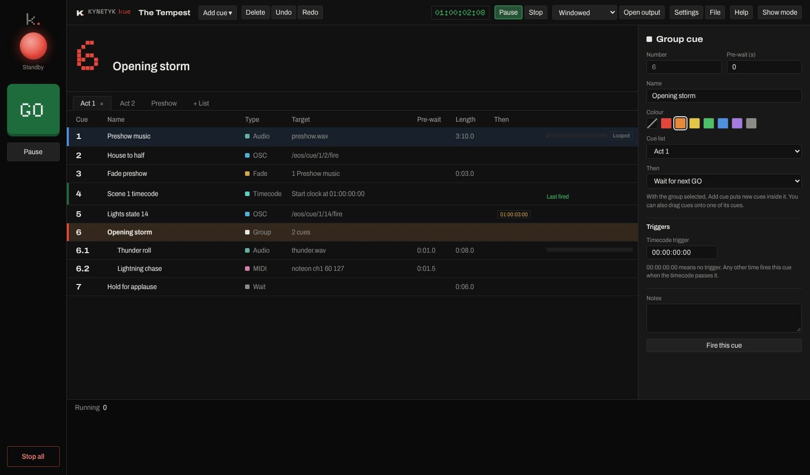

Run the whole show from one GO.
Show control for theatre and live events. Audio, video, OSC, MIDI and timecode in one cue list.

Audio, video, OSC and MIDI
One cue list for everything. Pre-waits, groups, auto-continue and auto-follow chain cues into sequences you fire with a single GO.
Fades you can draw
Nine curve presets, or shape your own in the curve editor. Fade sound and picture separately.
Timecode in and out
Chase MTC or LTC, or run the built-in clock. Trigger any cue at a time, and send MTC on to the desk.
Fire it from anywhere
MIDI learn for pads and foot pedals, OSC in from your desk, and a phone remote you open with a QR code.
Safe on show night
Show mode locks editing. Pause everything, undo anything, and get warned about missing media.
Moves with you
Bundle a show and all its media into one folder. Runs on Windows, macOS and Linux, and in the browser.
Download KYNETYKkue
Free. These builds aren't code-signed yet: on Windows click More info › Run anyway, on a Mac right-click the app › Open.
Like it? A donation keeps it going.